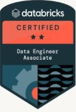
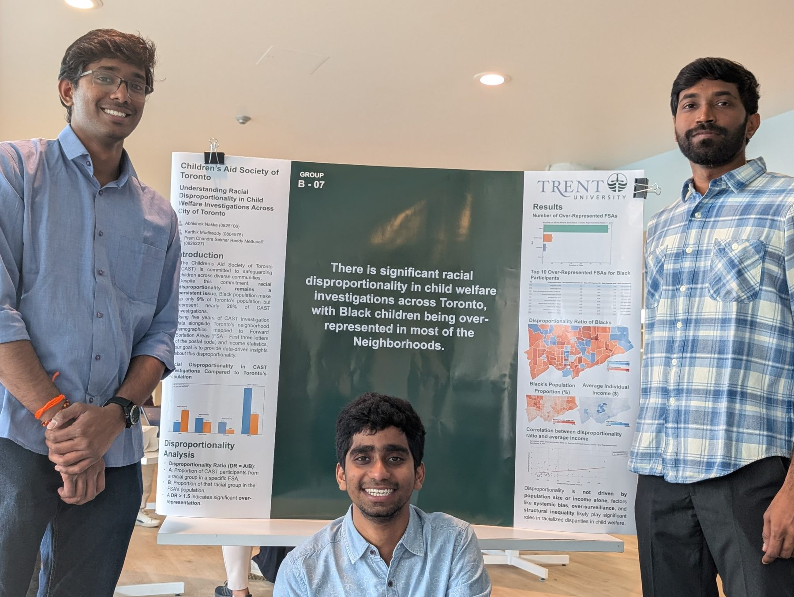

Master of Science in Big Data Analytics
Final-year project with the Children's Aid Society of Toronto, using Python, R and statistical analysis to study racial disproportionality in child welfare investigations.
ServiceNow Developer
Building CSM, ITSM and ITOM solutions, integrations and automation on the ServiceNow platform
Final-year project with the Children's Aid Society of Toronto, using Python, R and statistical analysis to study racial disproportionality in child welfare investigations.
ServiceNow
Validates the core skills to configure, administer and maintain a ServiceNow instance.
ServiceNow · CMDB and CSDM
Covers building and maintaining accurate configuration data on the platform.

Databricks · Issued Sep 2025 · Expires Sep 2027
Validates building data pipelines on the Databricks Lakehouse platform.
Astronomer · Issued Oct 2025
Covers authoring and running data workflows with Apache Airflow.
IBM, via Coursera · May 2025
A 16-course program covering SQL and relational databases, NoSQL, ETL with Python and shell scripts, data warehousing, Apache Spark, Airflow and Kafka, finishing with a capstone project.
I build custom applications and develop customizations only if needed (when no OOTB solution is available) in scoped applications on ServiceNow with server-side and client-side scripting, and move them from lower environments to Production through update sets.
I design CSM Implementations like Zendesk to ServiceNow migration, CSM portal customization/access to customers, Service Catalogs with request and approval workflows and approvals and assignment automation that make support teams faster.
I keep configuration item data accurate and connected to monitoring, including CMDB population from external inventories like VMware and NetBox. Alert-driven incident mapped to CIs.
I connect ServiceNow to the tools like PagerDuty, VMware Aria Ops and Azure Monitor with Scripted REST APIs, official adaptors/plugins, Integration Hub automation, and use Table APIs with Python/Transform maps for migrations and bulk data loads.
I run platform upgrades, access control and license governance, and support production with careful change management.
I analyze data with Python and R, test hypotheses statistically, and turn results into charts and maps people can act on.
Carbon60 · Ontario, Canada
Ford Motor Company · India
Cognizant · Hyderabad, India

A team project of three with the Children's Aid Society of Toronto (CAST), presented at Trent University. We combined five years of CAST investigation data with Toronto neighbourhood demographics and income, mapped to Forward Sortation Areas. A disproportionality ratio above 1.5 marked significant over-representation.
I take photos of the places I visit, and I like finding the frame that makes a familiar view look new. This one is the Toronto skyline and the CN Tower, shot by me.
I play badminton to stay active, and I enjoy the pace and quick thinking of the game.
I listen to music while I work and unwind with movies, and I like talking about both.
I like getting outdoors on trails and treks, and the reset that comes with it.
If you have a ServiceNow platform, migration or integration that needs an owner, send me a note.